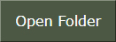
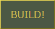
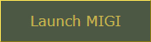

Installing Addons
Introduction
MIGI uses specific addon formats, either starting with the prefix m_ or p_
Addons are to be placed inside Counter-Strike Global Offensive/migi/csgo/addons/
Click  inside MIGI to access it directly.
Rules:
- As a mod user you should never rename downloaded addons.
- Some addons are made to be used offline or with people that have the same addons, those won't work online or in demos.
- Other addons are made for playing on sv_pure 0 servers or used in demos, those are limited but more compatible.
- Addons can't override the same weapon / item, if they do, either the game will crash or won't behave as intended.
M_ (MIGI) VPKs
M_ VPKs are standard MIGI addons, they have config files that get appended while generating the pak.
Those can only be used offline or in lobbies if you're the host / have the same addon as the host.
They usually replace game items like weapons, sounds, particles, and more. They're the fastest kind of addons.
P_ (PAK) Folders
P_ folders are addons overwriting files from the main Pak01 VPK. Depending on how the P_ addon is made, it should be compatible with demos and sv_pure 0 servers.
Make sure to unzip those folders if they're compressed and that the P_ folder you're putting
inside Counter-Strike Global Offensive/migi/csgo/addons/ contains the models/materials/other folders, otherwise they won't load.
This is what you should have for instance:
Other kinds of folders
If an addon is neither a M_ or P_ addon, then they weren't made for MIGI and shouldn't be used, unless you know what you're doing. Those need to be converted and stripped from any full config replacements they could have if they're shipped with sounds or particles.
Building and launching
Once you're done installing addons, click the  button at the center, then 
or add -game migi/csgo to your launch options (for tools like HLAE)
Keep in mind that each time you add or remove an addon, you'll need to build.